Trump 股票/ETF 交易分析报告
生成时间: 2026-05-31 21:19 · OGE Form 278-T · 第二任期上任以来
数据范围
- 分析区间: 2025-01-21 → 2026-03-31（交易发生日）
- 278-T 文件数: 6 份（有效 5）
- 披露日: 2025-08-19, 2026-01-14, 2026-04-23, 2026-05-12
- 股票/ETF 可交易笔数: 2,260（657 只 ticker）
- 股票/ETF 名义下限合计: $144.5M（OGE
amount_min求和） - 全部解析行: 3,900（含债券等；全文件名义合计约 $253.4M）
- 表格解析率: 92.7%
交易规模（Trump timing；名义 = OGE amount_min，金额优先于笔数）
| 方向 | 笔数 | 名义下限合计 | 占总额比例 |
|---|---|---|---|
| 买入 | 1,774 | $105.4M | 70.8% |
| 卖出 | 513 | $43.5M | 29.2% |
| 合计 | 2,287 | $148.9M | 100% |
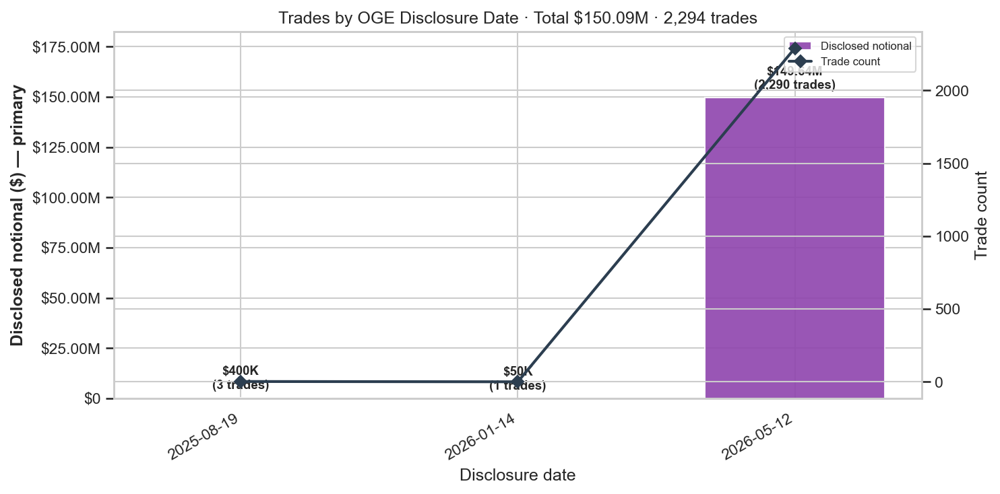
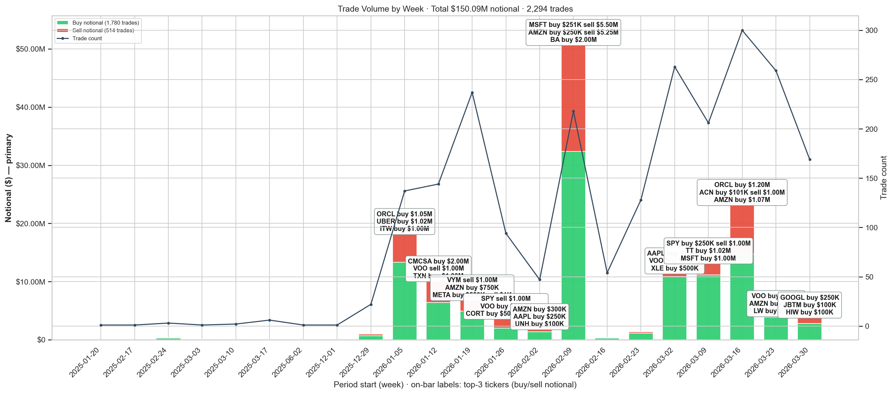
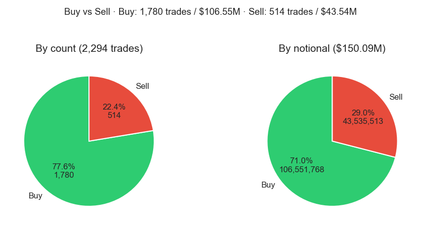
Trump 当前净多头持仓（Top 10）
基于 FIFO 未配对买入（match_status=open），按净名义金额排序。
Horizon 收益以 最早一笔未平买入 的交易日为 anchor（Trump timing）。
截至分析截止日仍标注 仍持有；明细见 reports/open_holdings_top10.csv。
| Ticker | 净名义($) | 未平笔数 | 最早买入 | 最近买入 | 持有天 | 状态 | +1d | +5d | +10d | +20d | +30d |
|---|---|---|---|---|---|---|---|---|---|---|---|
| AMZN | 2,396,015 | 15 | 2026-01-23 | 2026-03-27 | 127 | 仍持有 | -0.31% | 0.06% | -12.06% | -14.17% | -10.73% |
| AAPL | 2,200,008 | 8 | 2026-01-23 | 2026-03-25 | 127 | 仍持有 | 2.97% | 4.61% | 12.13% | 7.41% | 4.87% |
| MSFT | 2,062,013 | 13 | 2026-01-26 | 2026-03-31 | 124 | 仍持有 | 2.19% | -9.97% | -12.05% | -17.09% | -13.52% |
| CMCSA | 2,046,006 | 6 | 2026-01-12 | 2026-03-25 | 138 | 仍持有 | -2.00% | -1.96% | -0.08% | 12.49% | 7.20% |
| PTC | 2,018,006 | 6 | 2026-01-23 | 2026-03-02 | 127 | 仍持有 | 2.24% | -3.71% | -3.96% | -6.94% | 0.79% |
| COST | 1,862,012 | 12 | 2026-01-06 | 2026-03-25 | 144 | 仍持有 | -0.73% | 5.94% | 10.55% | 10.19% | 11.26% |
| MCHP | 1,530,005 | 5 | 2026-02-10 | 2026-03-17 | 109 | 仍持有 | 5.06% | 2.93% | -1.23% | -13.90% | -14.72% |
| VOO | 1,500,002 | 2 | 2026-03-02 | 2026-03-25 | 89 | 仍持有 | -0.88% | -1.18% | -2.55% | -7.69% | 1.44% |
| GOOGL | 1,445,009 | 9 | 2026-01-10 | 2026-03-31 | 140 | 仍持有 | 1.24% | -2.97% | 0.81% | -4.00% | -5.71% |
| AVGO | 1,381,008 | 8 | 2026-01-31 | 2026-03-31 | 119 | 仍持有 | -3.26% | 3.87% | 0.43% | -5.22% | -2.96% |
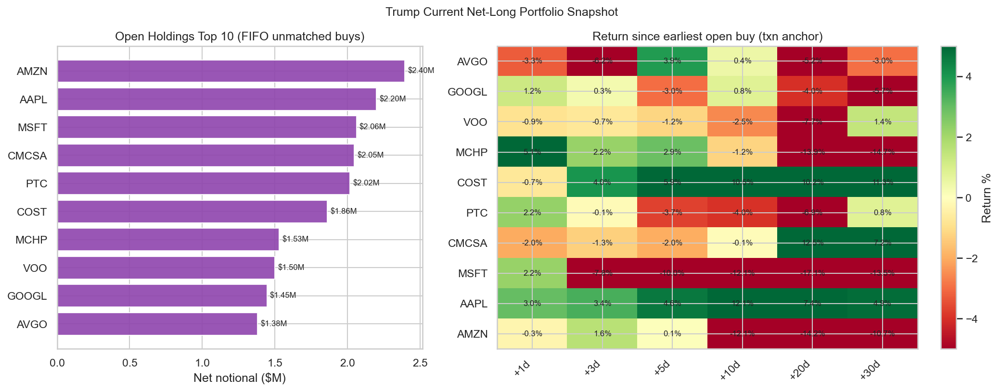
Trump 组合持仓与 PnL 时间序列
按 FIFO 净多头 重建每个交易日的 EOD 持仓：
- 持仓规模：未平仓买入的 OGE amount_min 合计（成本）及按收盘价 mark-to-market 的市值；
- 每日 PnL：各仍持有标的的日度价格变动 × 对应名义仓位，卖出日记入已实现收益；
- 累计 PnL：全部交易日 daily PnL 的 running sum（整组合曲线）。
- 样本交易日: 337 天
- 截止 2026-05-29：MTM 持仓 $95.1M，累计 PnL $11.6M
- 持仓 MTM 峰值: $95.1M（2026-05-29）
明细: reports/portfolio_daily.csv
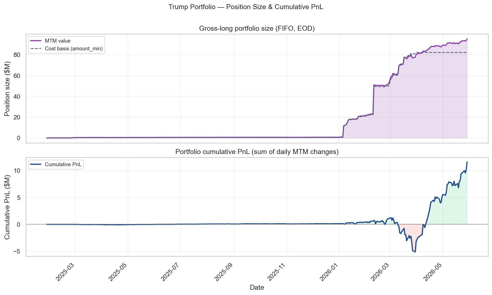
Cross-Check
- OGE 官方来源: ✅
- Form 278-T 检测: ✅
已纳入文件（逐份统计）
名义金额 = 各笔 OGE 区间下限（amount_min）相加；债券 filing 中「股票/ETF」多为 0 或 OCR 误映射。
| doc_id | 页数 | 披露日 | 解析笔数 | 股票/ETF笔数 | ticker数 | 股票名义($) | 全文件名义($) | 内容 |
|---|---|---|---|---|---|---|---|---|
| trump_278t_2025_08_19_a | 22 | 2025-08-19 | 108 | 3 | 2 | $400K | $21.2M | 以债券为主（含少量误解析） |
| trump_278t_2025_08_19_b | 7 | 2025-08-19 | 1 | 0 | 0 | — | $15K | 市政/公司债 |
| trump_278t_2025_11_17 | 3 | 2025-11-17 | 0 | 0 | 0 | — | — | 市政/公司债 |
| trump_278t_2026_01_14 | 8 | 2026-01-14 | 50 | 1 | 1 | $50K | $14.0M | 以债券为主（含少量误解析） |
| trump_278t_2026_04_23 | 8 | 2026-04-23 | 18 | 0 | 0 | — | $4.3M | 市政/公司债 |
| trump_278t_2026_05_08_bond | — | 2026-05-08 | — | — | — | — | — | 未下载 |
| trump_278t_2026_05_08_equity | 113 | 2026-05-12 | 3723 | 2256 | 640 | $144.0M | $213.8M | 股票/ETF 批量 |
样本验证
| Ticker | 动作 | 日期 | 匹配 |
|---|---|---|---|
| DELL | purchase | 2026-02-10 | ✅ |
| NVDA | purchase | 2026-02-10 | ✅ |
| MSFT | sale | 2026-02-10 | ✅ |
| AMZN | sale | 2026-02-10 | ✅ |
| META | sale | 2026-03-18 | ✅ |
Trump 本人发帖匹配
来源：仅 Truth Social（CNN 归档 + trumpstruth.org RSS + 手动 JSON）。
不含 Google News 等第三方报道——只有 Trump 自己发的帖 才能反映主动点名/炒作某公司的意图。
规则：以 交易为中心，对每笔交易在交易日 ±30 天、披露日 ±30 天内检索 Trump 帖文。
Ticker 级链接：帖文须 明确提及 ticker（$T 或公司全名）；未点名 ticker 的宏观帖不参与匹配。
- 载入 Trump 帖文（
events.parquet）: 6729 条 - 参与匹配的独立帖文: 13 条（去重）
- 匹配链接总行数: 121（含披露锚点 2,307）
- 至少 1 条 Trump 发帖 匹配的交易: 41 / 2314
- 至少 1 条 ticker 级 发帖匹配的交易: 41 / 2314
按链接类型
disclosure_event: 2,307ticker_mentioned: 73social_near_trade: 33social_near_disclosure: 15
按平台（独立事件数，非链接行数）
- truth_social: 13
样例帖文
- [truth_social] Palantir Technologies (PLTR) has proven to have great war fighting capabilities and equipment. Just ask our enemies!!! P
- [truth_social] A front page Article in The Fake News Wall Street Journal states, without any verification, that I offered Jamie Dimon,
- [truth_social] Trump sues JPMorgan Chase and CEO Jamie Dimon for $5B over alleged 'political' debanking: https://www.foxbusiness.com/po
- [truth_social] Numbers recently released show that TARIFFS have reduced the Trade Deficit of the United States by more than half. This
- [truth_social] To show you how ridiculous the opinion is, the Court said that I'm not allowed to charge even $1 DOLLAR to any Country u
- [truth_social] A very happy and blessed Good Friday to all, especially to the 186,000 Americans who gained Private Sector jobs in the m
Trump 发帖 × 收益 / 行为规律
以下仅用 Trump 本人 Truth Social 帖文中明确出现 ticker 的 strict 匹配（宏观帖、英文 homograph 如 A/S/HE 已过滤）。
Trump PnL = 该笔 买入 交易 timing +10 交易日名义 PnL；已实现 PnL = FIFO 配对 lot 的 entry→exit 收益。
Top 表按 (ticker, event) 去重；sale 行的 PnL 来自该笔卖出交易自身 timing，非买入。
是否存在「先买 → 发帖 → 卖」？
- FIFO 配对中 3 对持仓期间有 ticker 级别 Trump 发帖 提及
- 其中 2 对：买入 → 持仓期内 Trump 发帖 → 卖出
- 0 对：Trump 发帖在买入前 30 天内
- 持仓期内发帖相对买入日中位 lag: 3.0 天
- 上述「买→发帖→卖」样例：买入 +10d 平均收益 -1.73%（PnL $-1,843）；已实现平均 -5.69%（PnL $-507）
解读：在 帖文必须出现 ticker 的严格筛选下：
- 2 对 FIFO 持仓满足「买→持仓期内 Trump 点名 ticker→卖」，中位发帖 lag 约 3.0 天；
- 第三方新闻报道（Google News 等）已排除，不参与本分析；
- 未见稳定的「secret 建仓 → Truth 点名该 ticker → 数日内卖出」链条；
- Truth 宏观帖（通胀、美元等）若未点名 ticker，已从本分析剔除。
Top 交易×Trump 发帖（按交易名义金额排序）
| Ticker | 动作 | 交易日 | 名义($) | 发帖日 | Δ天 | +10d PnL | 平台 | 帖文 |
|---|---|---|---|---|---|---|---|---|
| PLTR | sale | 2026-02-10 | 1,000,001 | 2026-04-10 | 59 | 38,133 | truth_social | Palantir Technologies (PLTR) has proven to have great war fighting cap |
| JPM | sale | 2026-01-02 | 50,001 | 2026-01-17 | 15 | 1,782 | truth_social | A front page Article in The Fake News Wall Street Journal states, with |
| JPM | sale | 2026-01-12 | 50,001 | 2026-01-22 | 10 | 3,726 | truth_social | Trump sues JPMorgan Chase and CEO Jamie Dimon for $5B over alleged 'po |
| TTD | purchase | 2026-02-10 | 50,001 | 2026-04-04 | 53 | -5,279 | truth_social | Not only were the jobs numbers GREAT yesterday, 178,000 new jobs, but |
| TTD | purchase | 2026-02-10 | 50,001 | 2026-02-20 | 10 | -5,279 | truth_social | To show you how ridiculous the opinion is, the Court said that I'm not |
| TTD | purchase | 2026-02-10 | 50,001 | 2026-04-03 | 52 | -5,279 | truth_social | A very happy and blessed Good Friday to all, especially to the 186,000 |
| GS | purchase | 2026-03-02 | 15,001 | 2026-05-12 | 71 | -1,165 | truth_social | CNBC incorrectly reported that the Great Jensen Huang, of Nvidia, was |
| GS | purchase | 2026-03-02 | 15,001 | 2026-05-12 | 71 | -1,165 | truth_social | RT @realDonaldTrumpCNBC incorrectly reported that the Great Jensen Hua |
| GS | purchase | 2026-03-02 | 15,001 | 2026-05-13 | 72 | -1,165 | truth_social | RT @realDonaldTrumpCNBC incorrectly reported that the Great Jensen Hua |
| LMT | purchase | 2026-03-12 | 15,001 | 2026-03-06 | -6 | -586 | truth_social | We just concluded a very good meeting with the largest U.S. Defense Ma |
| TMO | purchase | 2026-03-21 | 15,001 | 2026-03-11 | -10 | 357 | truth_social | I am on my way to the Great State of Ohio, which I love and WON BIG th |
| NOC | purchase | 2025-03-17 | 1,001 | 2026-03-06 | 354 | 44 | truth_social | We just concluded a very good meeting with the largest U.S. Defense Ma |
完整列表: reports/media_top_trade_event_pairs.csv
Top3 匹配 ticker 时间线（买 → 发帖 → 卖 / 仍持有）
下图展示 匹配名义金额最大的 3 只 ticker：绿色▼=买入、蓝色◆=Trump Truth 发帖、红色▲=卖出；灰条=持仓区间，右端标注是否仍持有。
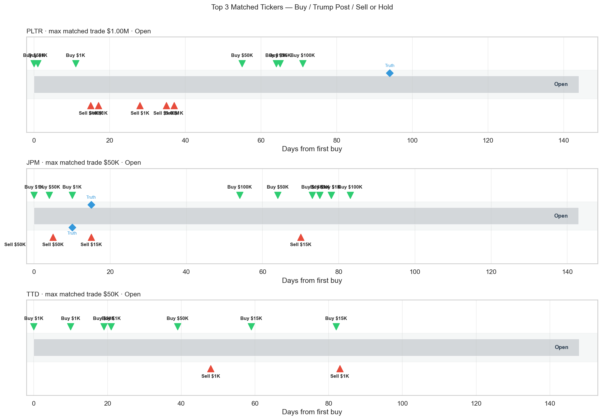
Trump 发帖匹配的 Top Ticker（按 Trump 名义金额排序）
| Ticker | Trump名义($) | 独立事件 | 交易笔数 | 买/卖链接 | Trump NW +10d |
|---|---|---|---|---|---|
| PLTR | 1,335,012 | 1 | 12 | 7/5 | 3.60% |
| JPM | 451,015 | 2 | 6 | 6/6 | 0.86% |
| TTD | 135,009 | 4 | 7 | 19/2 | -12.05% |
| GS | 61,005 | 3 | 5 | 15/0 | 0.65% |
| TMO | 45,003 | 1 | 3 | 3/0 | -2.00% |
| LMT | 31,003 | 1 | 3 | 3/0 | -4.08% |
| NOC | 1,001 | 1 | 1 | 1/0 | 4.39% |
「买→发帖→卖」样例（ticker 必须在帖中出现）
| Ticker | 买 | 卖 | 持仓d | 发帖日 | 发帖-买(d) | 买+10d收益 | 买+10d PnL | 已实现收益 | 已实现 PnL | 样例 |
|---|---|---|---|---|---|---|---|---|---|---|
| JPM | 2026-01-17 | 2026-03-18 | 60 | 2026-01-17 | 0 | 4.00% | $40 | -4.95% | $-50 | A front page Article in The Fake News Wall Street |
| JPM | 2026-01-11 | 2026-01-22 | 11 | 2026-01-17 | 6 | -7.45% | $-3,726 | -6.43% | $-964 | A front page Article in The Fake News Wall Street |
明细: reports/media_buy_post_sell_patterns.csv
持仓时间（FIFO 买→卖配对）
- 成功配对: 291 对，涉及 202 个 ticker
- 持仓中位: 31 天，均值: 37 天
- 规则: 同 ticker 按日期排序，先进先出；无对应买入的卖出标为
prior_position；未卖出买入标为open - 明细:
reports/matched_lots.csv（每笔买-卖对），reports/holdings_by_ticker.csv（每 ticker 平均持仓）
Top tickers（按 Trump 名义金额）
ticker n_matched_pairs n_open_buys n_prior_sells avg_holding_days median_holding_days min_holding_days max_holding_days trump_total_notional
AMZN 4 15 0 31.00 32.5 24.0 35.0 8848023.0
MSFT 4 13 0 92.50 20.5 6.0 323.0 8443021.0
VOO 1 2 2 47.00 47.0 47.0 47.0 5500006.0
NVDA 4 7 0 28.75 31.0 11.0 42.0 3617015.0
SPY 1 1 2 11.00 11.0 11.0 11.0 3500005.0
BA 2 4 0 39.50 39.5 35.0 44.0 2533008.0
ORCL 2 14 0 25.00 25.0 15.0 35.0 2530018.0
UBER 2 12 0 36.50 36.5 36.0 37.0 2289015.0
META 4 13 0 102.00 38.0 9.0 323.0 2202021.0
ACN 4 4 0 30.00 31.5 22.0 35.0 2184012.0
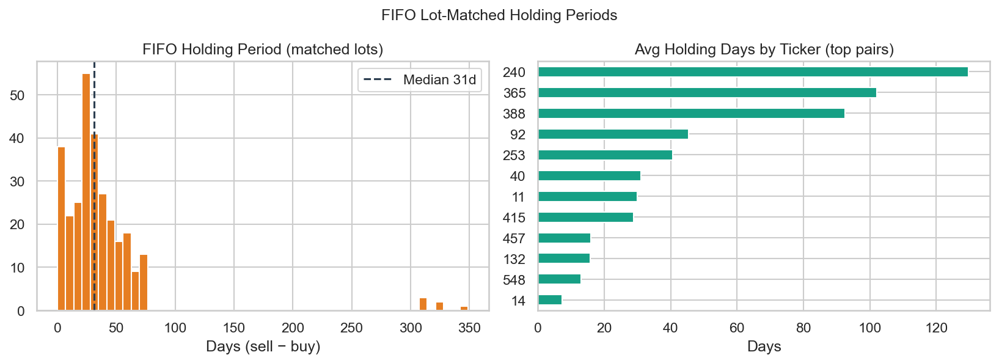
1. Trump 自身交易 timing（锚点 = 交易发生日）
- 事件研究：每笔交易当日为锚点，看 +h 交易日价格；买入 sign=+1，卖出 sign=−1
- 已实现（realized）：FIFO 配对 entry=买入日收盘、exit=卖出日收盘（见 §1d）
- notional = OGE
amount_min；窗口: 1, 3, 5, 10, 20, 30 个交易日
1a. 合计（买 + 卖）
| 窗口(交易日) | 笔数 | 总名义($) | 总PnL($) | 名义加权收益率 |
|---|---|---|---|---|
| +1d | 2288 | 148,906,275 | -222,803 | -0.15% |
| +3d | 2288 | 148,906,275 | 238,569 | 0.16% |
| +5d | 2288 | 148,906,275 | 1,785 | 0.00% |
| +10d | 2288 | 148,906,275 | -219,695 | -0.15% |
| +20d | 2288 | 148,906,275 | -124,233 | -0.08% |
| +30d | 2288 | 148,906,275 | 1,901,053 | 1.28% |
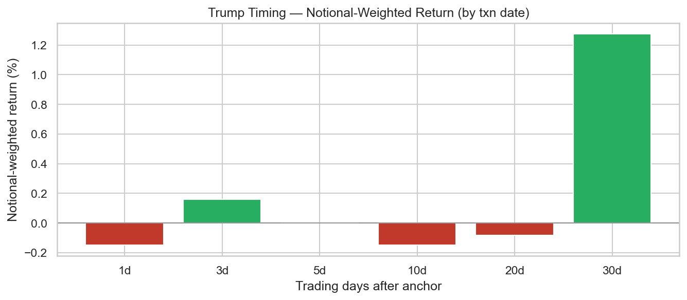
1b. Trump 买（仅 purchase）
| 窗口(交易日) | 笔数 | 总名义($) | 总PnL($) | 名义加权收益率 |
|---|---|---|---|---|
| +1d | 1774 | 105,356,763 | -582,065 | -0.55% |
| +3d | 1774 | 105,356,763 | -409,758 | -0.39% |
| +5d | 1774 | 105,356,763 | -501,241 | -0.48% |
| +10d | 1774 | 105,356,763 | -346,415 | -0.33% |
| +20d | 1774 | 105,356,763 | 535,786 | 0.51% |
| +30d | 1774 | 105,356,763 | 1,745,498 | 1.66% |
1c. Trump 卖（仅 sale，按做空计 sign=−1）
| 窗口(交易日) | 笔数 | 总名义($) | 总PnL($) | 名义加权收益率 |
|---|---|---|---|---|
| +1d | 513 | 43,534,511 | 359,414 | 0.83% |
| +3d | 513 | 43,534,511 | 648,753 | 1.49% |
| +5d | 513 | 43,534,511 | 503,088 | 1.16% |
| +10d | 513 | 43,534,511 | 126,750 | 0.29% |
| +20d | 513 | 43,534,511 | -659,496 | -1.51% |
| +30d | 513 | 43,534,511 | 155,647 | 0.36% |
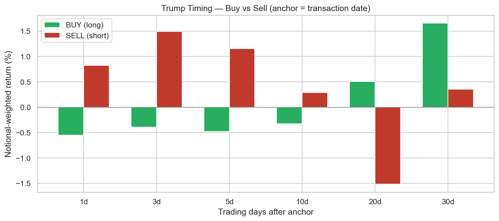
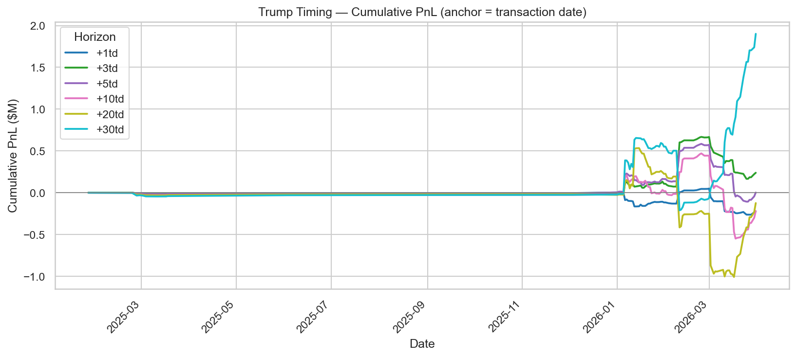
1d. 已实现收益（FIFO entry → exit）
假设：entry = 买入日收盘价，exit = 卖出日收盘价；名义 = min(买/卖 amount_min)。
未平仓买入按 mark-to-market 至 2026-05-30（未实现）。
| 类型 | 配对/笔数 | 名义($) | 总 PnL($) | NW 收益率 | 中位持仓(天) | 胜率 |
|---|---|---|---|---|---|---|
| 已实现（买→卖） | 290 | 8,531,290 | -730,951 | -8.57% | 31 | 15.2% |
- 无对应买入的卖出（
prior_position）: 227 笔 — 未计入 realized
明细: reports/realized_fifo_lots.csv
2. Follow Trump（锚点 = OGE 披露日）
- 披露日跟单，方向与 Trump 一致：买入 = 做多，卖出 = 做空
- 下面先给 合计，再拆 Follow 买 / Follow 卖
2a. 合计（买 + 卖）
| 窗口(交易日) | 笔数 | 总名义($) | 总PnL($) | 名义加权收益率 |
|---|---|---|---|---|
| +1d | 2288 | 148,906,275 | 89,330 | 0.06% |
| +3d | 2288 | 148,906,275 | -228,627 | -0.15% |
| +5d | 2288 | 148,906,275 | -451,342 | -0.30% |
| +10d | 2288 | 148,906,275 | 1,010,177 | 0.68% |
| +20d | 4 | 450,004 | 15,554 | 3.46% |
| +30d | 4 | 450,004 | 1,380 | 0.31% |
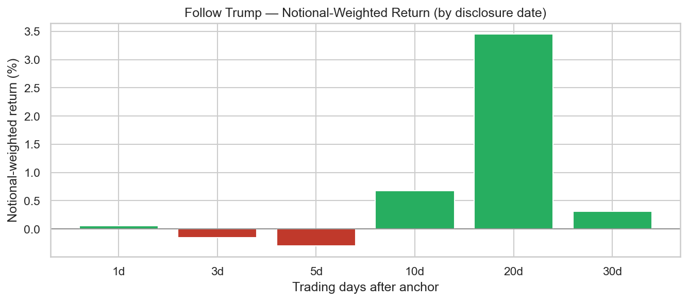
2b. Follow 买（仅 purchase，做多）
| 窗口(交易日) | 笔数 | 总名义($) | 总PnL($) | 名义加权收益率 |
|---|---|---|---|---|
| +1d | 1774 | 105,356,763 | -96,512 | -0.09% |
| +3d | 1774 | 105,356,763 | -175,491 | -0.17% |
| +5d | 1774 | 105,356,763 | -401,577 | -0.38% |
| +10d | 1774 | 105,356,763 | 1,966,202 | 1.87% |
| +20d | 4 | 450,004 | 15,554 | 3.46% |
| +30d | 4 | 450,004 | 1,380 | 0.31% |
2c. Follow 卖（仅 sale，做空）
| 窗口(交易日) | 笔数 | 总名义($) | 总PnL($) | 名义加权收益率 |
|---|---|---|---|---|
| +1d | 513 | 43,534,511 | 185,744 | 0.43% |
| +3d | 513 | 43,534,511 | -53,275 | -0.12% |
| +5d | 513 | 43,534,511 | -49,929 | -0.11% |
| +10d | 513 | 43,534,511 | -956,611 | -2.20% |
| +20d | 0 | 0 | 0 | — |
| +30d | 0 | 0 | 0 | — |
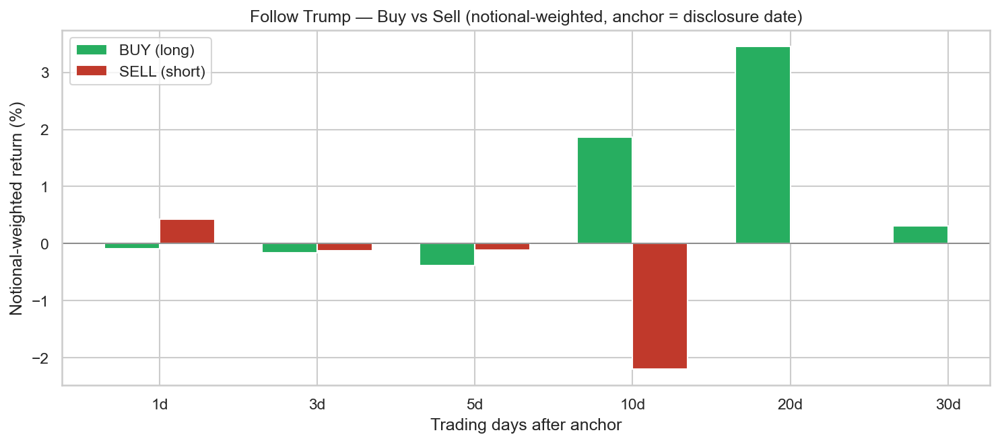
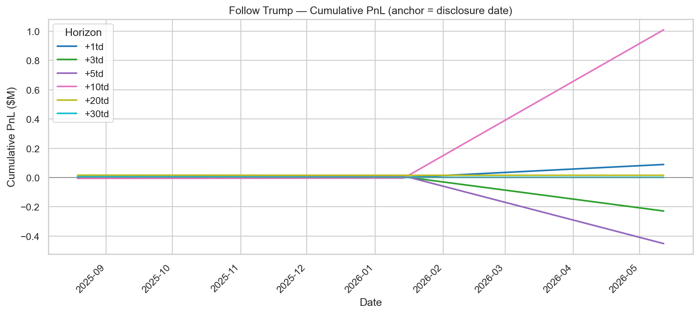
附录：旧版等权披露日回测（参考）
- Reveal lag 中位: 71 天
- 等权按披露日复利 (+1td only): 2.25%
- 胜率 (+1td): 43.3%
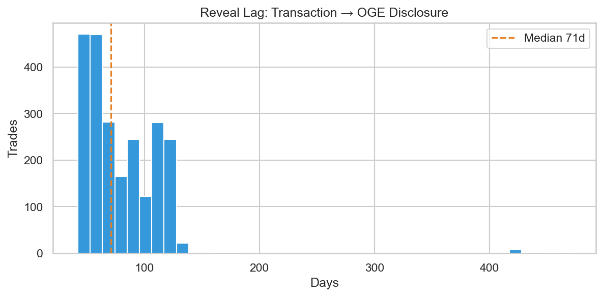
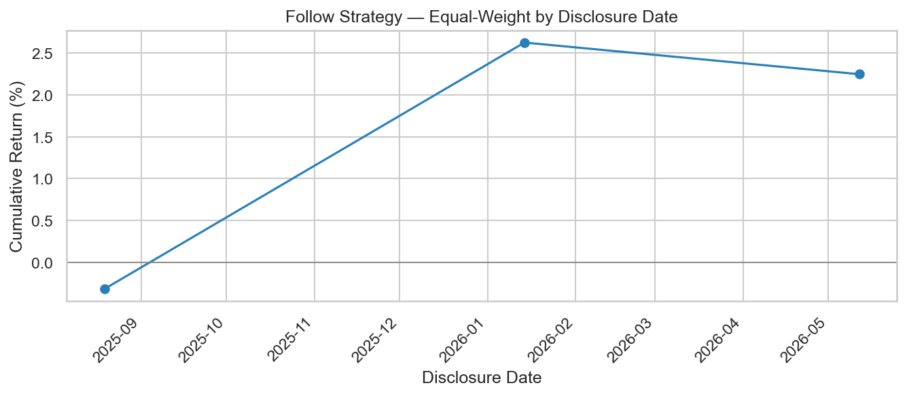
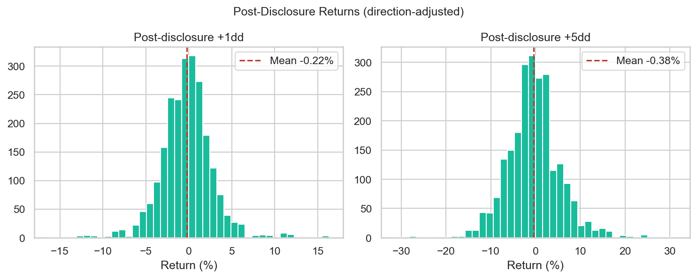
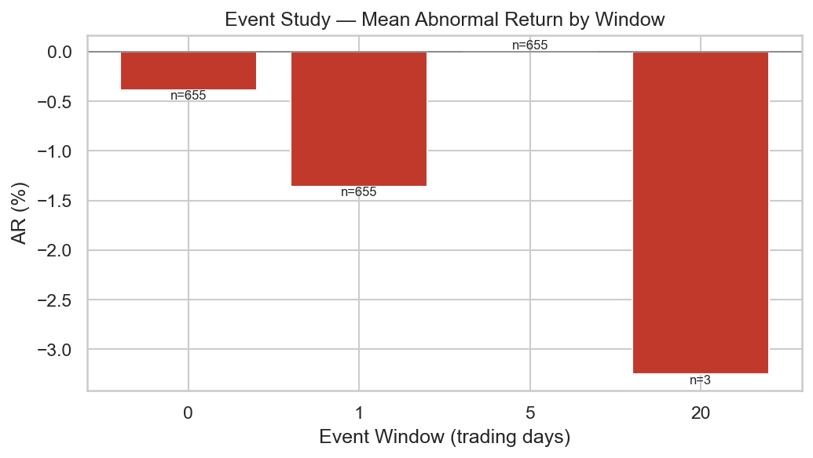
Top Tickers（按 Trump 名义金额 amount_min 合计）
ticker trades buys sales total_notional avg_post_5d avg_post_1d
AMZN 23 19 4 8848023.0 -0.015898 0.010574
MSFT 21 17 4 8443021.0 0.014650 -0.003886
VOO 6 3 3 5500006.0 0.000000 0.000000
NVDA 15 11 4 3617015.0 -0.000359 0.010674
SPY 5 2 3 3500005.0 0.001206 -0.001119
BA 8 6 2 2533008.0 -0.046143 0.007874
ORCL 18 16 2 2530018.0 -0.022355 0.012198
UBER 16 14 2 2289015.0 -0.022296 -0.016304
META 21 17 4 2202021.0 -0.000204 0.012678
AAPL 8 8 0 2200008.0 0.014145 0.013806
ACN 12 8 4 2184012.0 0.013803 -0.019890
NFLX 12 10 2 2167012.0 0.012701 -0.000761
CMCSA 6 6 0 2046006.0 -0.004016 0.001606
PTC 8 7 1 2034008.0 0.005044 -0.017733
COST 12 12 0 1862012.0 0.070889 0.010960
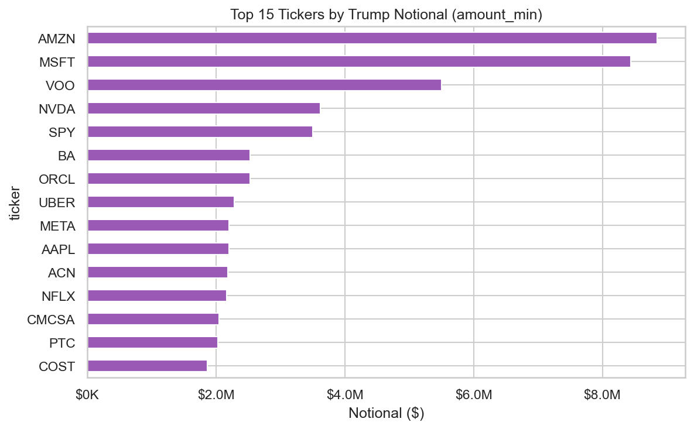
说明
- 上任以来 6 份 278-T 中，股票/ETF 批量披露集中在
trump_278t_2026_05_08_equity（2026-05-12 收到）；其余多为市政/公司债 periodic report。 - 名义金额 = OGE 披露区间下限相加，非精确成交价；单笔可能落在 $1,001–$15,000 至 $50M+ 等 bracket。
return_post_disclosure_20d在披露日距数据截止不足 20 交易日时为空。
完整数据: reports/trades_analysis.csv